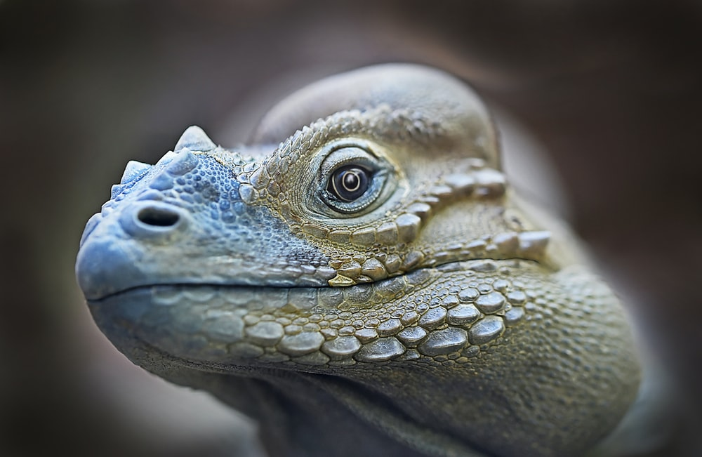
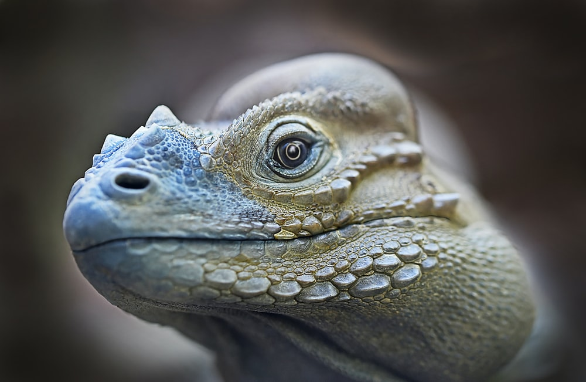

IGUANAS

La iguana es un reptil perteneciente a la familia Iganadiae. Su tamaño esá entre los 15 cm hasta los 2 metros de largo y puede llegar a pesar unos 15 kg. Cuando están jovenes tienen una coloración con tonos verdes y al ir madurando predomina un color grisáceo con crestas o espinas en su espalda.
La alimentación de la iguana va variando según su etapa de vida, pero la mayor parte de sus años son herbivoras, Viven en lugares tropicales con mucha vetación y es un animal que puede ser domesticado.

Caracteristicas
Tercer Ojo
Pacificas
Cambia de Color
Tercer Ojo
Pacificas
Cambia de Color
 
